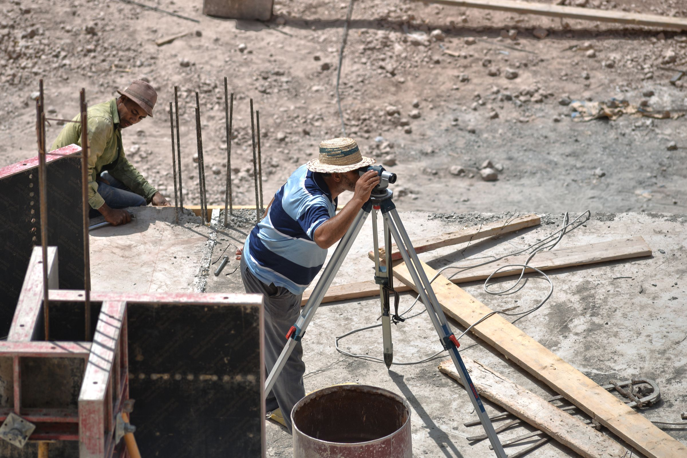
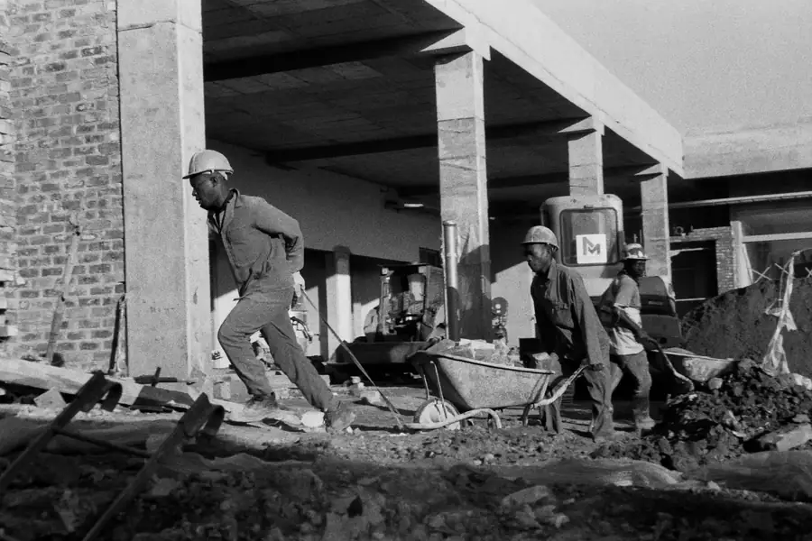
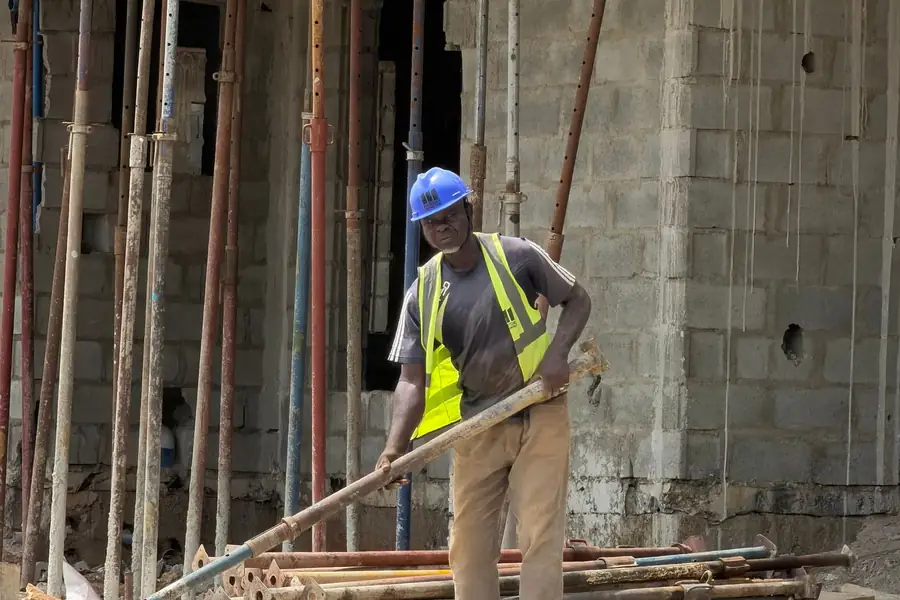
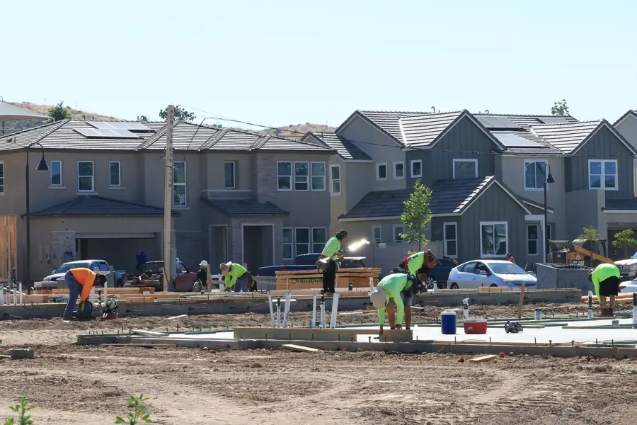

B7/1407/8/2003
- Type of contractor
- Building
- Managing director
- Julius Mkwabe
- Physical address
- House No. 1/2, Dodoma
- Postal address
- P.O. Box 1192, Dodoma

About Jomka
This page sets out the company registration record in full. It lists both CRB registration numbers, their classification, the managing director named on each entry, the registered physical and postal addresses, and the contact address on file. Every field can be checked independently against the Contractors Registration Board public register before any engagement.
Public register
Every detail below is taken from the Contractors Registration Board public register, where our entry can be checked independently.
Source: Contractors Registration Board contractor search, accessed 26 October 2026.
In the field
Setting out, structural framing, blockwork and slab work — the daily reality behind the registration numbers above.



How a job runs
We visit the site, review drawings or scope, and agree on what is being built.
A written bill of quantities and price, with programme and payment terms.
Works proceed to programme with regular progress updates on site.
Snagging, completion sign-off and handover of the finished works.
Jomka Building & Civil Engineering Works operates from House No. 1/2 in Dodoma, with postal address P.O. Box 1192. The firm holds two registrations with the Contractors Registration Board of Tanzania, both issued in 2003: building works under B7/1407/8/2003 and civil works under C7/0703/09/2003. The two entries cover the full range of work shown on our services page — from residential blockwork and perimeter walling to earthworks, facility rehabilitation and slab foundations.
Both entries are classified Class 7, category Local. The building registration lists Julius Mkwabe as managing director; the civil registration lists Julius Mkale. Both records carry the same registered address — House No. 1/2 for physical premises and P.O. Box 1192 for postal correspondence in Dodoma — and the same contact address, jmkale2003@hotmail.com.
The Contractors Registration Board maintains the national register of contractors in Tanzania, so any client, quantity surveyor or procuring body can search the company name on the CRB site and confirm these details directly before awarding work.
Get in touch
Send the location, drawings or scope, and the timeline. We reply with a quotation.
Contact Jomka